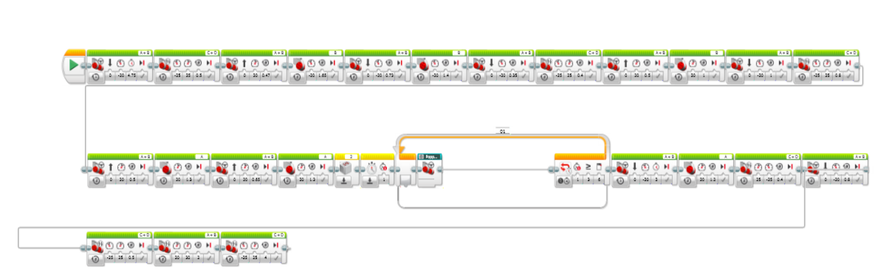

A project that solved a unique problem statment
for my General Engineering & Prototyping course. Winner of Nick Russo Award for Outstanding General Engineering Design.
Project Coordinator
Christopher Glenn, Head Designer/Builder
Cameron Noori, Director of Software
September 2018 to December 2018
Problem prompt: A blackout has occurred in New York City. Three hospitals have used up their backup power supplies due to the unanticipated duration of the blackout. There are some power supply areas in the city with fuel cells that supply enough power for the hospitals' need. In order to save lives, Mayor Bill de Blasio has issued an RFP for a robot that can retrieve and deliver fuel cells accumulating a minimum of 200 hours of reserve energy.
Your robot must be able to navigate the course autonomously around the city and retrieve fuel cells and deliver them to hospitals, in less than 5 minutes. You must design the product with the tools given (Lego Mindstorms, Lego Digital Designer, Autodesk Fusion360, etc).
For the project we separated our roles to efficiently accomplish tasks and finish on time. I was the Project Coordinator, and was in charge of keeping our progress on track and making sure all the requirements were met. We were a team of a Head Builder, Director of Software, and Project Coordinator. Together, we were RCC Builders and Developers, and our robot’s name was Poppy.
To plan out the schedule of the project I used Microsoft Project and made the template myself. I also made the cost estimate table for our project, so that we could demonstrate that our robot design was not only efficient but also cost effective.
All the milestone presentations and the final presentation were made by myself as well, and I always made sure we covered every detail that would showcase our robot’s best features. When we submitted our project, we successfully completed the mission, budgeted an inexpensive cost estimate, had a higher performance than our competitors, and created innovative code that ensured Poppy stay on course.
We created two designs for our robot, and tested to see which would be the most efficient for the course. When reworking our second design, we kept in mind the time frame we had to keep for the project’s mission. So, we created a design that could hold multiple fuel cells at once, minimizing the time taken, while also maximizing the number of fuel cells transported.
At the end of the semester, our robot delivered 210 fuel cell hours in under one minute. To pick up fuel cells, we 3D printed an exterior robot part, that served as a ramp to easily retrieve fuel cells. To ensure the robot could move autonomously on the course while also traveling in the best way, we added a gyro sensor to help stay straight and navigate the course.
The efficient mechanism of four arm pairs on the robot, made it so multiple fuel cells can be carried at once. They all operated on a gear mechanism too easily be reset automatically by Poppy. The wider arm design also lowered the margin of error when obtaining fuel cells.
In our Mindstorms code, we used structured code blocks that had designated purposes, such as a straight driving function, retrieval of a fuel cell, and loops that would execute these commands.
To see our final presentation and more details on the RDS project, see below.